ESP8266-模块基本操作
🔛是什么&为什么
在物联网设备中，ESP8266是一颗明星级芯片，它以低功耗、强大的网络连接能力和极具性价比的特点备受开发者青睐。那么问题来了：ESP8266可以通过各种方式控制，为什么我们要用AT指令？
简单来说，AT指令是一种通信模块的“通用语言”。它将复杂的底层通信操作封装成简单易懂的命令，比如连接WiFi、发送数据，甚至进行固件更新。对于开发者而言，使用AT指令的ESP8266模块有几个明显优势：
- 快速上手：无需深入了解WiFi协议或ESP8266内部的复杂机制，只需串口发送几条指令，就能实现网络通信。
- 跨平台兼容：AT指令作为标准化接口，可以配合任何支持串口通信的设备，比如单片机、树莓派、甚至是PC。
- 模块化设计：通过AT指令，你可以将ESP8266作为一个独立的网络通信模块，不影响主控设备的正常运行。
- 节省开发时间：无需编写复杂的驱动程序，使用现成的指令即可实现功能，尤其适合资源受限的项目。
从本质上讲，AT指令让开发者与ESP8266之间的沟通变得像“聊天”一样简单。这不仅降低了开发门槛，也让项目更具灵活性。通过AT指令实现的功能，不仅能在基础操作中游刃有余，更能向更复杂的应用扩展，比如我们今天要探索的WiFi-OTA（远程固件升级）。
如果直接使用带WiFi模块的芯片开发（比如 ESP8266 或 ESP32）而不依赖 AT 指令接口，那么你需要对以下几个方面有一定的了解，尤其是在使用其内置的 WiFi 和网络功能时：
1. LWIP（Lightweight IP）轻量级的 TCP/IP 协议栈，专为资源受限的嵌入式系统设计。
基础网络操作：TCP/UDP 的连接、数据收发。
动态 IP 分配（DHCP）和域名解析（DNS）。
2. FreeRTOS（多任务管理嵌入式操作系统）
任务调度与管理，确保网络与其他功能并行运行。
使用信号量、队列实现数据同步。
3. WiFi 功能与协议
工作模式：STA（联网）和 AP（热点）。
安全机制：如 WPA/WPA2 加密。
4. 厂商工具与 SDK
熟悉芯片厂商的 SDK（如 ESP-IDF），快速实现功能开发。
接下来，我们将从基础开始，逐步深入，带你掌握ESP8266模块的魅力！
🎦ESP8266烧录新固件
🎞️是什么&为什么
由于购买到的ESP-01S模块，通常使用的是旧版本固件，不包含MQTT功能，我们可以从官方网站下载最新版ESP8266固件（bookmarkInline：bookmarkInline），通过官方提供的烧录工具，烧录最新的固件（本例使用的是MQTT透传AT固件（固件号：1471）
🎞️实操验证
硬件接线
将ESP8266和STC8按照如下方式接线，然后将STC8接到电脑上。注意STC8的固件里不要有串口相关操作。
ESP8266 | STC8 | 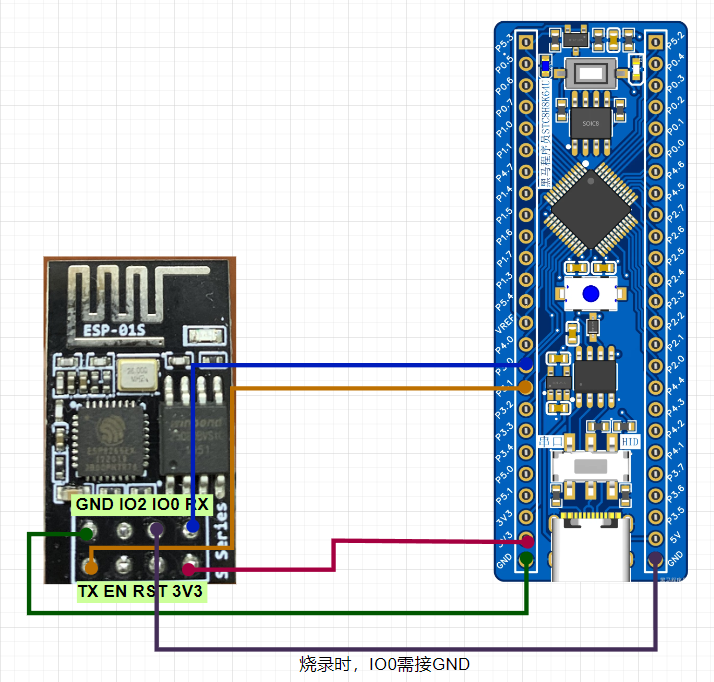 |
3V3 | 3V3 | |
GND | GND | |
RX | P3.0 | |
TX | P3.1 | |
IO0 (烧录时需接) | GND |
准备烧录工具
flash_download_tool 教程参见：bookmarkInline：bookmarkInline
打开后，选择ESP8266, Develop，点击OK
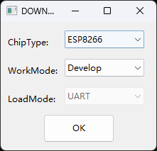
选择要烧录的固件：
ESP8266最新版本AT指令固件：
最新固件（1471）ESP8266-AT_MQTT-1M_20210723_AT2.3.0.0_SDK3.4.zip
使用包含HTTP和MQTT功能固件：
- 使用支持HTTP最新版
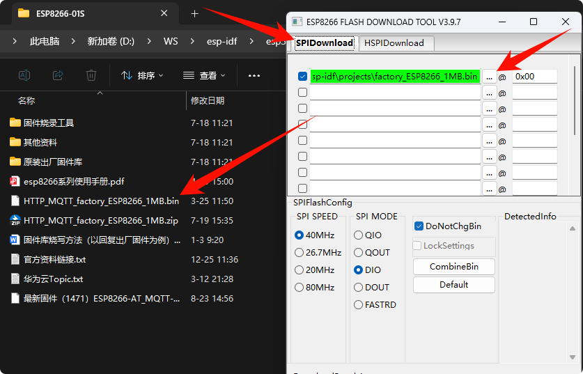
开始烧录
选择正确的串口COM，点击START
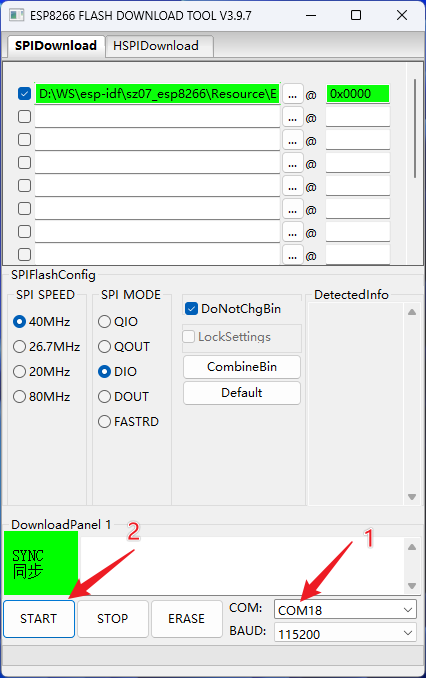
先确保IO0已经接GND，然后将ESP32-01S的RST接地1秒左右，自动开始烧录。
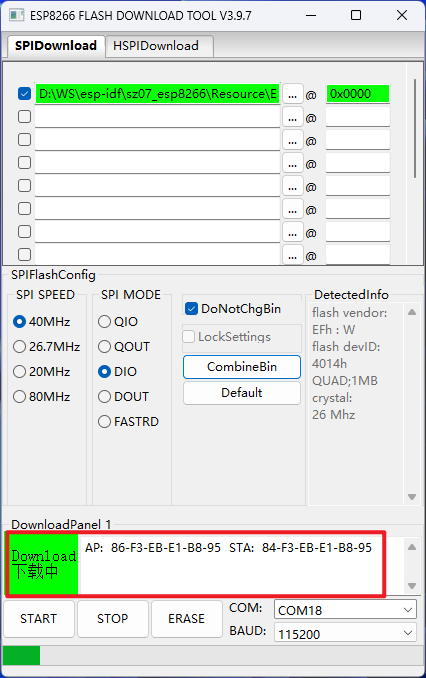
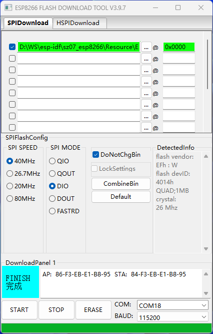
检查版本
将IO0断开GND，重新上电，进入正常工作模式，通过串口工具连接，发送AT+GMR\r\n指令，如果显示的版本如下，则说明固件可用，且升级成功。
- 1471版本固件，仅多支持MQTT（不支持HTTP)
- HTTP固件
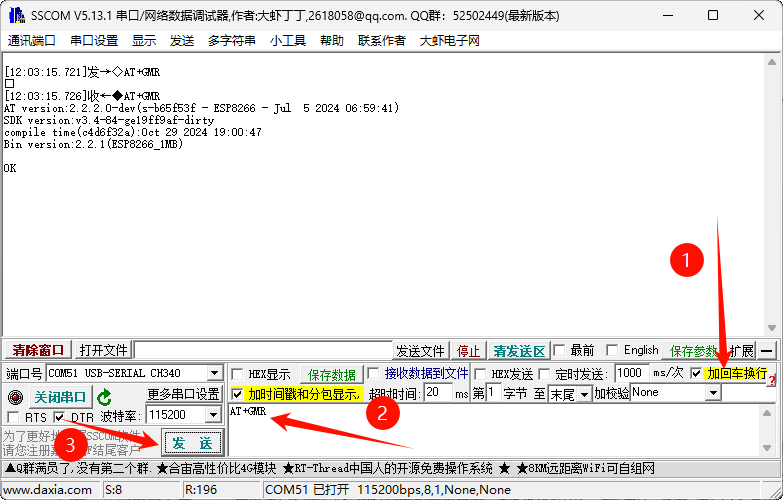
如果没有升级成功，则是老版本1.7.4.0
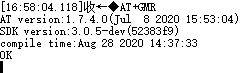
如果烧录完重启无反应，记得将IO0断开GND，然后给设备重新上电，或可尝试将RST拉低（接一下GND）重启
🎞️知识拓展
关于ESP8266的固件和AT指令资料：
aithinker 安信可
ESP8266系列模组专题 https://docs.ai-thinker.com/esp8266
乐鑫官方
AT命令集：https://docs.espressif.com/projects/esp-at/zh-cn/release-v2.2.0.0_esp8266/AT_Command_Set/index.html
🎦AT指令-基础操作
🎞️是什么&为什么
主要学习一些跟网络无关的，与模块功能本身相关的AT指令
🎞️实操验证
AT 测试
指令 | AT |
说明 | 测试AT模块是否有响应 |
示例 | AT OK |
AT+GMR 查看版本信息
指令 | AT+GMR |
说明 | 返回固件版本信息 |
示例 | AT+GMR AT version:2.3.0.0-dev(s-bcd64d2 - ESP8266 - Jun 23 2021 11:42:05) SDK version:v3.4-22-g967752e2 compile time(b498b58):Jun 30 2021 11:28:20 Bin version:2.2.0(ESP8266_1MB) OK |
AT+RST 软重启模组
指令 | AT+RST |
说明 | 软重启模组 |
示例 | AT+RST OK |
AT+RESTORE 恢复出厂设置
指令 | AT+RESTORE |
说明 | 恢复出厂设置 |
示例 | AT+RESTORE OK |
ATE0 关闭 AT 回显功能
指令 | ATE0 |
说明 | ATE0关闭AT回显 ATE1开启AT回显 |
示例 | OK |
🎦AT指令-WIFI操作
🎞️是什么&为什么
进行网络通讯前，要先将模块通过Wifi路由器连接到互联网，我们可以通过AT指令将模块连上互联网
🎞️实操验证
配置ESP8266为STA模式
[codeblock]要先进入STA模式，才能扫描和连接Wifi
扫描附近Wifi
[codeblock]连接指定Wifi
[codeblock]连接成功响应示例：
[13:35:06.394]收←◆AT+CWJAP="WIFI_IOT","3.1415926"
[13:35:09.129]收←◆WIFI CONNECTED
[13:35:10.465]收←◆WIFI GOT IP
OK
查询本机IP
[codeblock]响应示例：
[13:36:16.909]收←◆AT+CIFSR
+CIFSR:STAIP,"192.168.1.100"
+CIFSR:STAMAC,"84:f3:eb:e1:b8:95"
OK
使能上电自动连接Wifi模式
[codeblock]🎞️知识拓展
- 查询Wifi模式
[codeblock]0: 无 Wi-Fi 模式，并且关闭 Wi-Fi RF
1: Station 模式
2: SoftAP 模式
3: SoftAP+Station 模式
- 查询当前连接的Wifi
- 断开Wifi连接
- 开启SmartConfig功能
先进入STA模式
[codeblock][codeblock]开启 ESP-TOUCH+AirKiss 兼容模式
- 停止SmartConfig功能
SmartConfig配网模式下，可以在公众号“乐鑫信息科技”，“安信可科技”进行一键配网
常见配网方式：一键配网smart config、SoftAP配网、蓝牙配网、屏幕配网。
SmartConfig智能配网流程
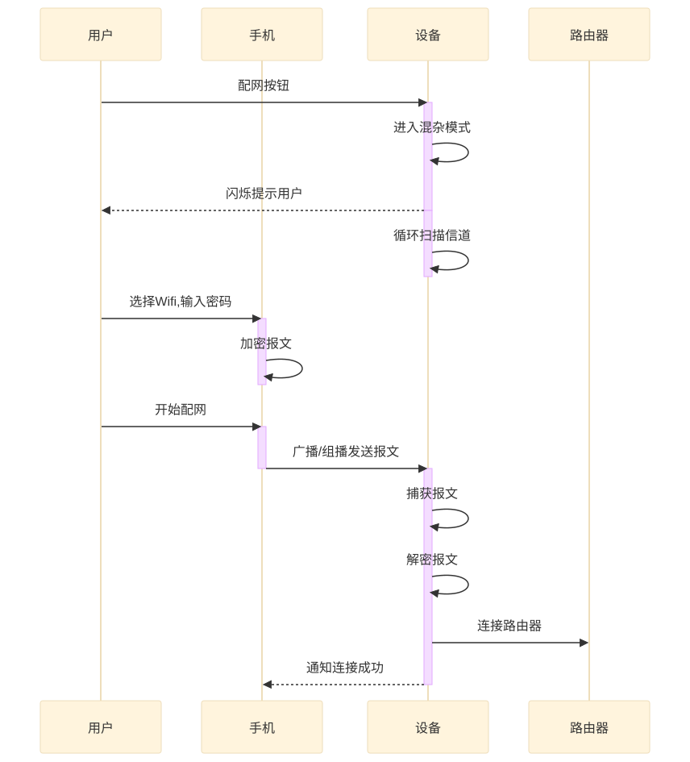
不同厂商智能配网方案
厂商 | 芯片方案 | 技术名称 | 发包方式 |
TI | CC3200 | SmartConfig | 往某一固定IP发udp包 |
高通 | QCA4004/QCA4002 | SmartConnection | |
联发科MTK | MTK7681 | SmartConnection | 组播地址编码 |
MARVELL | MC200+8801/MW300 | EasyConnect | 组播地址编码 |
Reltek | AMEBA | SimpleConfig | 组播地址编码 |
乐鑫 | ESP8266 | ESP-TOUCH | 组播,通过长度编码 |
微信 | AirKiss | 全网广播,通过长度编码 |
🎦AT指令-TCP操作
🎞️是什么&为什么
学完WiFi配网的AT指令后，接下来要学习TCP的AT指令，因为配网只是让设备联网，而TCP通信是实现设备与服务器或其他设备间数据交互的关键。这是从“联网”到“通信”的自然过渡，让设备真正具备物联网功能。
🎞️实操验证
创建TCP服务器
在电脑端使用网络调试助手，创建TCP服务器，ip地址为本机连接的无线网IP（本例为172.16.0.63），端口8080
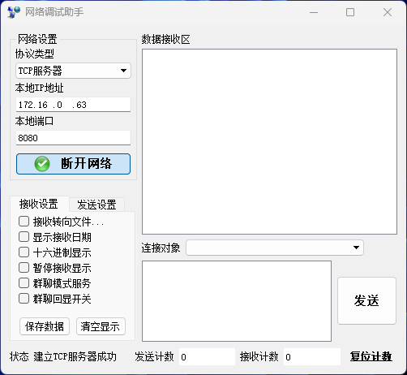
连接到TCP服务器
开启单连接（创建TCP客户端）
[codeblock]连接到服务器
[codeblock]如果连接不到TCP服务器，需要关闭网络的防火墙
- 打开防火墙设置
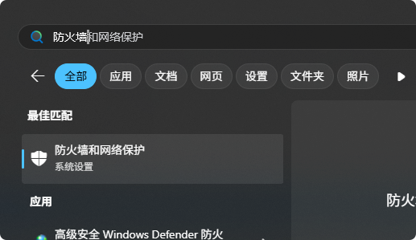
- 关闭使用中的防火墙
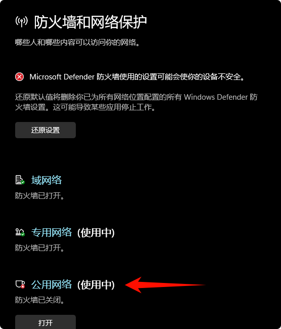
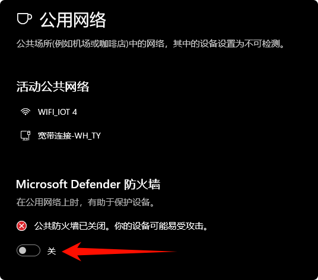
发送数据
设置要发送的字节数量：举例为10个字节
[codeblock]在主窗体输入10个字节，输入框不会显示内容，一直输入即可
[codeblock]可以看到TCP服务器收到客户端发来的消息
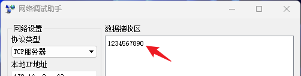
关闭连接
通讯完毕后，记得及时关闭链接以释放资源
[codeblock]🔚重点难点&易错点
- 给ESP8266烧录固件前，要检查接线，避免烧毁硬件
- 连接Wifi前，一定要记得配置ESP8266为STA模式
- 服务器断开后，要关闭连接释放资源